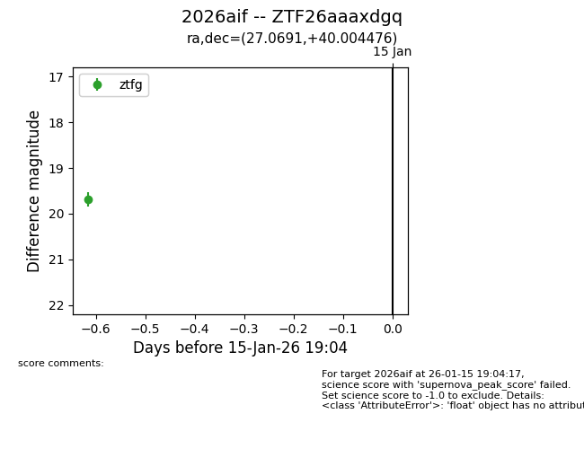
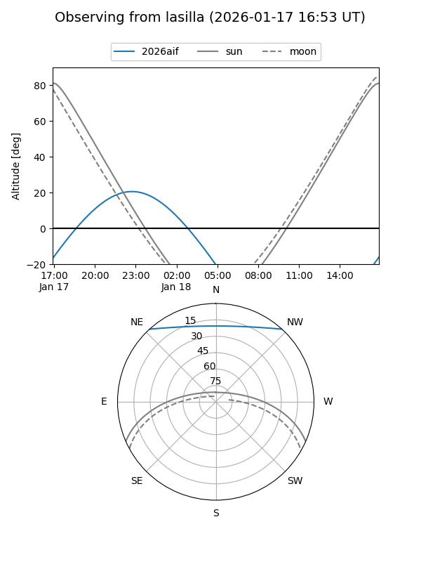
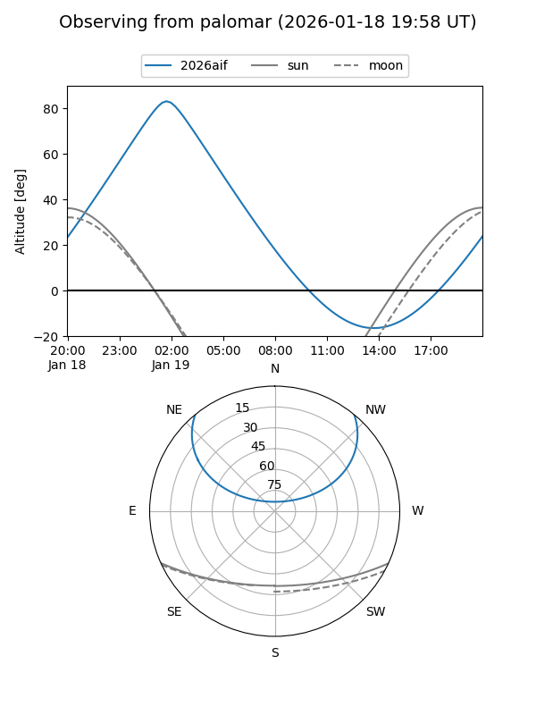
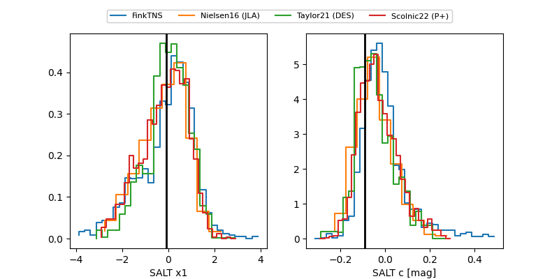

2026aif
Target 2026aif at 2026-01-19 05:25
Aliases and brokers:
FINK: link
Lasair: link
ALeRCE: link
TNS: link
YSE: link
alt names
ZTF26aaaxdgq (ztf,fink_ztf)
2026aif (tns,yse)
Coordinates:
equatorial (ra, dec) = 27.0691,+40.00448
equatorial (HMS+DMS) = 01:48:16.58,+40:00:16.11
galactic (l, b) = (134.5974,-21.57629)
Flags:
Photometry:
last ztfg=19.35, ztfr=19.49
2 ztfg, 3 ztfr detections
Lightcurve

Visibility


Additional plots
